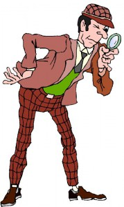
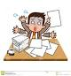

Задача 1. Выведите координаты мыши относительно блока в момент движения курсора мыши внутри блока. Координаты выводить под блоком.
Координаты: Х: Y:
Задача 2. Создайте блок div, в качестве изображения фона установите ему изображение закрытой папки. Добавьте событие, которое выполняется при
двойном клике на блоке и заменяет фон блока на изображение открытой папки.
Задача 3. Добавьте в документ 300-400 блоков div квадратной формы с
размерами сторон 30px, и цветом фона. Добавление элементов выполните
с помощью цикла. Добавьте событие при наведении мыши, которое будет
скруглять данные блоки с помощью border-radius до круга. (Для
замедления эффекта скругления в CSS можно добавить transition).
Задача 4. Создайте div размерами ширина – 100%, высота 250px. Ниже
добавьте 4-5 изображений с одинаковыми классами, разного размера.
Добавьте событие, которое будет при клике на изображении
устанавливать его фоном блока div со свойством background-size: contain.


Задача 5. Создайте блок размерами 50x50px. Добавьте событие клик, так,
что при каждом клике на блоке он отодвигается на 100px вниз от
предыдущего положения.
Задача 6. РЕАЛИЗУЙТЕ ТРИГГЕР ПЕРЕКЛЮЧАТЕЛЬ Реализуйте триггер переключатель следующего вида: При загрузке переключатель находится в первом положении.
При клике, он переходит в положение два (средняя картинка), а в консоль
выводится цифра 1.
При следующем клике переключатель переходит в состояние три (нижняя
картинка), а в консоль выводится цифра 2. При следующем клике,
переключатель переходит в состояние 1 (верхняя картинка), а в консоль
выводится 0.